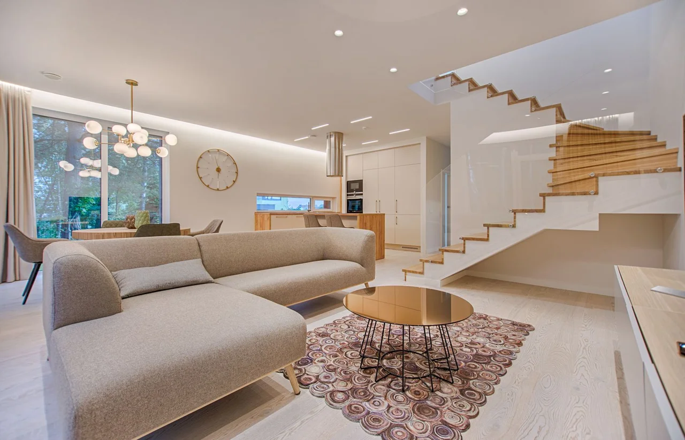
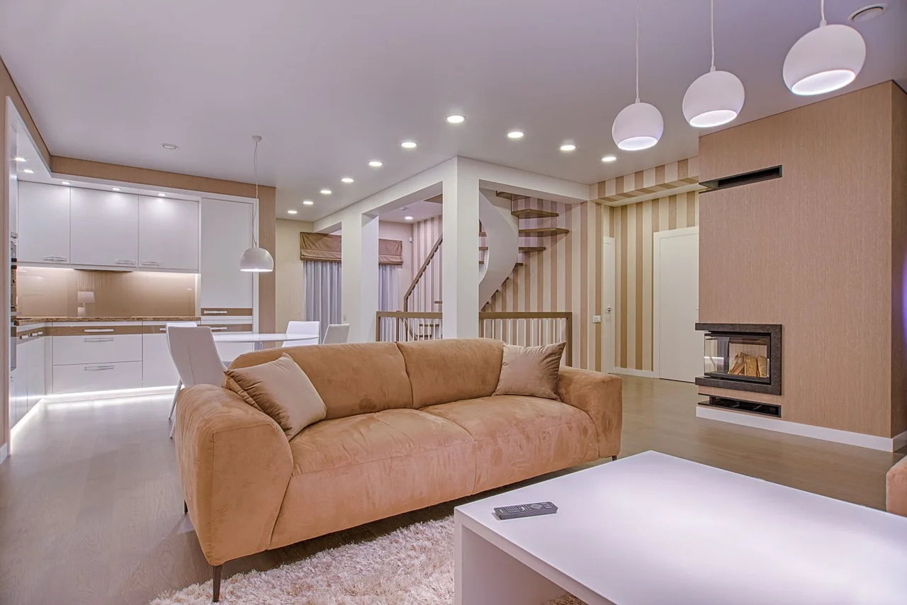

DEMOSTRACIÓN · negocio ficticio
LIMPIEZA DE ESPACIOS · COSTA RICA
El espacio
vuelve a respirar.
Explore una consulta de limpieza pensada para su espacio y sus prioridades.
Preparar mi consultaSimulación local. No envía solicitudes.

01 / EL SERVICIO
Cada espacio.
Su propio cuidado.
No todo necesita lo mismo. Explore estos alcances conceptuales y vea qué le gustaría consultar.
ALCANCE CONCEPTUAL / HOGAR
Para los espacios que usted vive.
Una consulta sobre pisos, superficies accesibles, cocina y baños. Las prioridades y los materiales definirían el alcance de la visita.
Por confirmar: productos, frecuencia y condiciones del espacio.
Oficina
Superficies de trabajo despejadas, pisos y áreas compartidas. Equipos, documentos y objetos personales quedan fuera del alcance conceptual.
A fondo
Una zona específica, como cocina o baños, para definir materiales y necesidades. No se presupone limpieza especializada ni trabajo en altura.

02 / ANTES DE LA VISITA
Primero, entender.
Después, cuidar.
Así se organizaría una consulta. Un recorrido de ejemplo, no un procedimiento validado de un negocio real.
- 01
Conocer el espacio
Tipo de lugar, tamaño aproximado y las zonas que requieren atención.
- 02
Acordar el alcance
Prioridades, materiales, acceso y exclusiones. Precio y disponibilidad se confirmarían antes.
- 03
Revisar lo acordado
Un repaso del alcance para que ambas partes sepan qué se atendería.
03 / PRUEBE LA EXPERIENCIA
Su espacio.
Sus prioridades.
Prepare una consulta de ejemplo. No le pediremos nombre, teléfono ni correo. Todo ocurre en esta página.
Solo orienta la conversación. No calcula un precio.
¿Esta empresa existe?
No. LimpiaPro Express es una marca ficticia creada para mostrar un diseño web. No ofrece servicios ni acepta reservas.
¿Se guardan mis elecciones?
No. Las elecciones permanecen en la memoria de esta página y se reinician al recargar. No hay cuentas, cookies de marketing ni envío de datos.
¿Las fotografías muestran trabajos realizados?
No. Son fotografías de stock ilustrativas. No representan clientes, resultados ni espacios atendidos por esta marca.